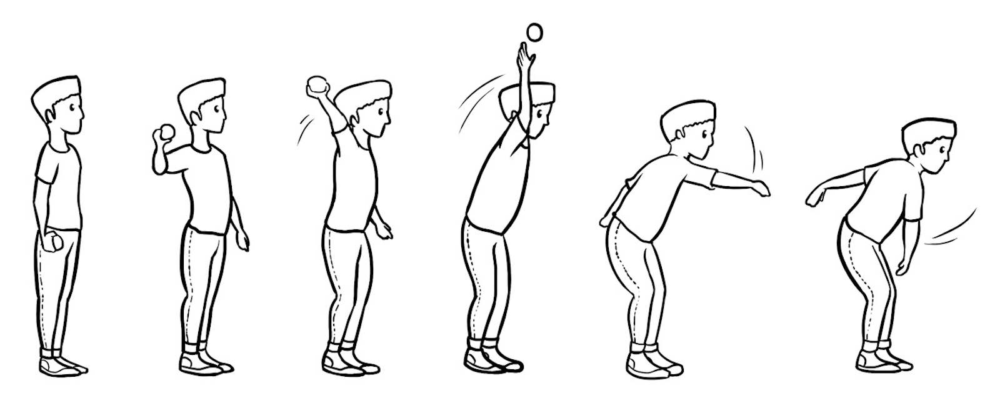
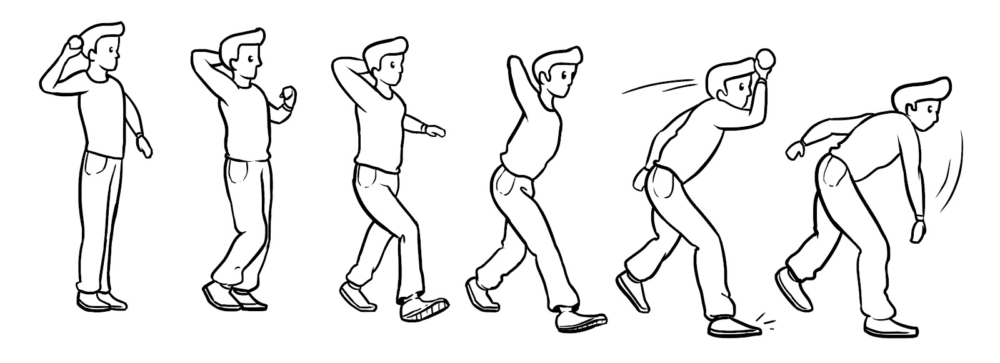
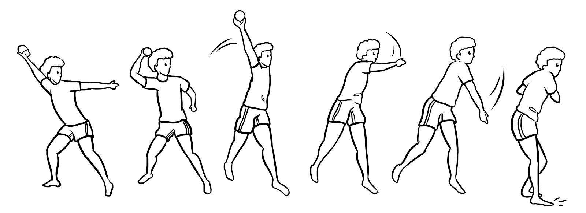
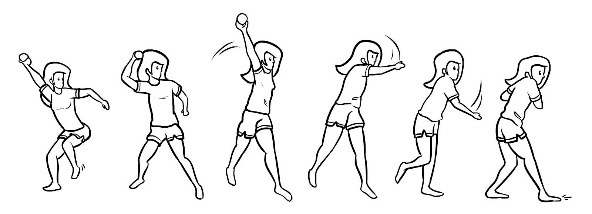

%%| fig-width: 6.5
flowchart LR
A[DQ] --> |YES| B[UCQ]
B -->|YES| D[Level 4]
B -->|NO| E[Level 3]
A[DQ] --> |NO| F[LCQ]
F -->|YES| G[Level 2]
F -->|NO| H[Level 1]
The Furtado-Gallagher Computerized Movement Pattern Assessment System (FG-COMPASS) is a new tool intended to assess fundamental movement skill proficiency of children 5-10 years old.
The instrument uses a decision-tree approach to assess skill proficiency levels. The framework model is depicted below.
%%| fig-width: 6.5
flowchart LR
A[DQ] --> |YES| B[UCQ]
B -->|YES| D[Level 4]
B -->|NO| E[Level 3]
A[DQ] --> |NO| F[LCQ]
F -->|YES| G[Level 2]
F -->|NO| H[Level 1]
Where,
DQ is the discriminatory question
UCQ is the upper confirmatory question
LCQ is the lower confirmatory question
Levels 1-4 are the resulting proficiency skill levels
The DQ is intended to discriminate between the two most extreme levels (i.e., levels 1 and 2). The UCQ is intended to confirm the individual is level 4. If it fail to confirm it, then the individual is assessed as level 3. Similarly, the LCQ is intended to confirm that the individual is level 1. if it fails to confirm it, then the individual is assessed as level 2.
The framework above was used to create decision-trees for 10 fundamental movement skills (i.e., 5 Locomotor and 5 Manipulative skills). The decision-tree for Overhand Throw is presented below.
%%| fig-width: 6.5
flowchart LR
A[Does the trunk rotate to the side \n of the throw during the \n preparation action?] --> |YES| B[Is there a long \n contralateral step forward?]
B -->|YES| D[Level 4]
B -->|NO| E[Level 3]
A[Does the trunk rotate to the side \n of the throw during the \n preparation action?] --> |NO| F[Is there a step forward \n with either foot?]
F -->|YES| G[Level 2]
F -->|NO| H[Level 1]



